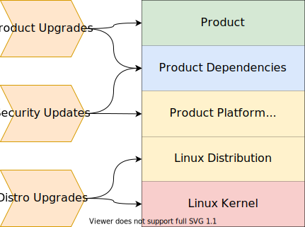
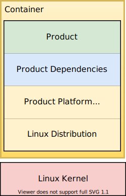
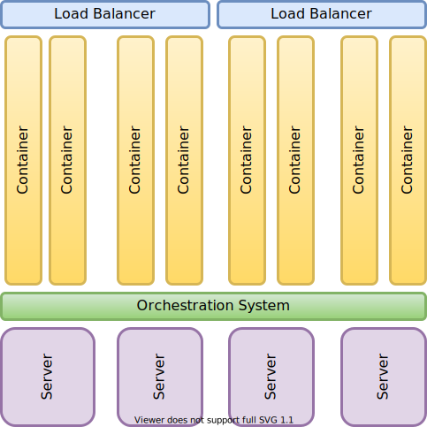
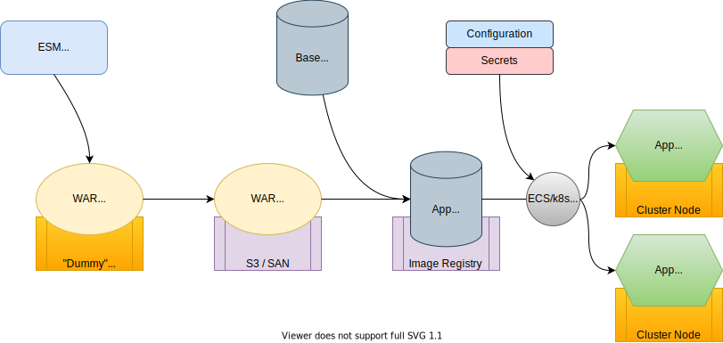

Dan Boitnott
“Docker is an open platform for developing, shipping, and running applications. Docker enables you to separate your applications from your infrastructure so you can deliver software quickly.”



| On-Prem | AWS | OCI | Azure | |
|---|---|---|---|---|
| ECS | 🌟 | |||
| ECS+Fargate | ✓ | |||
| Cloud-Managed k8s | ✓ | 🌟 | 🌟 | |
| Self-Managed k8s | 🌟 | ✓ | ✓ | ✓ |
